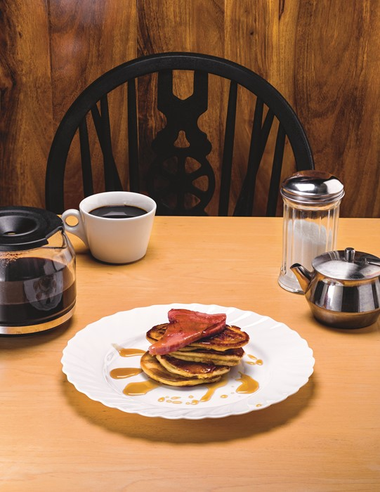

Griddle Cakes with Ham and Maple Syrup

Description
"These are gonna change your life"
Ingredients
- 1 1/2 cup all purpose flour
- 1 tsp baking powder
- 1 tsp baking soda
- 2 tbsp granulated sugar
- 1/2 tsp salt
- 1 1/2 cup buttermilk
- 2 whole eggs
- 3 tbsp melted butter
- 1 thick slice ham
Directions
- To prepare the griddle cakes, combine the dries together in a mixing bowl. In a separate bowl, stir together the eggs, buttermilk, and 3 tbsp melted butter.
- Place a cast iron pan over medium high heat. Add about 1-2 tbsp of butter to the pan to melt. Stir the wet griddle cake ingredients to the dries and combined. Ladle a small about of the batter to the hot pan. Each griddle cake should be around 4-5" wide. Cook until the edges start to set and bubbles form at the top. Flip it over and cook on the other side for another two minutes. Keep the rest of the cakes warm as you repeat with the rest of the batter.
- In the same pan over medium high heat, add one tbsp of oil. Cook the ham on both sides until brown. Serve with the griddle cakes.
- Serve with butter and warm maple syrup.